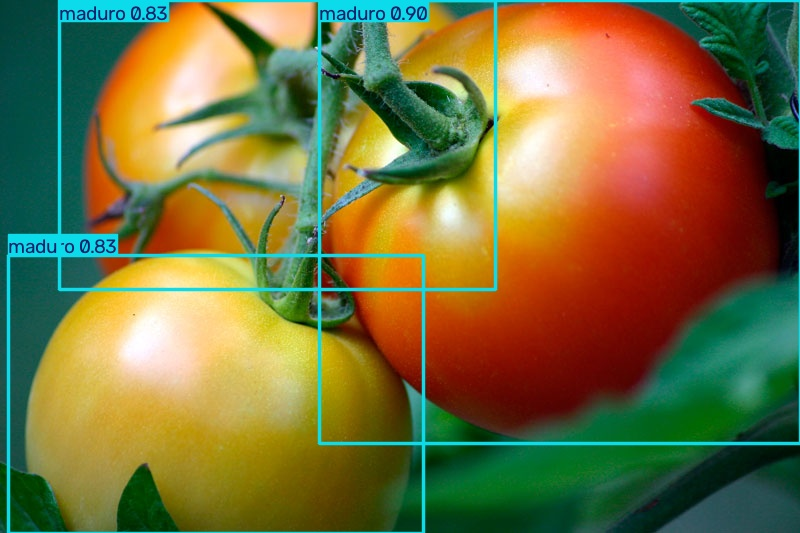
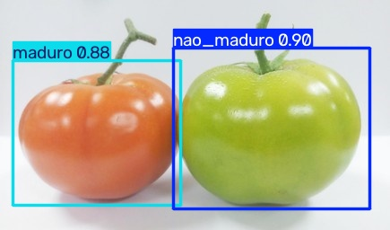
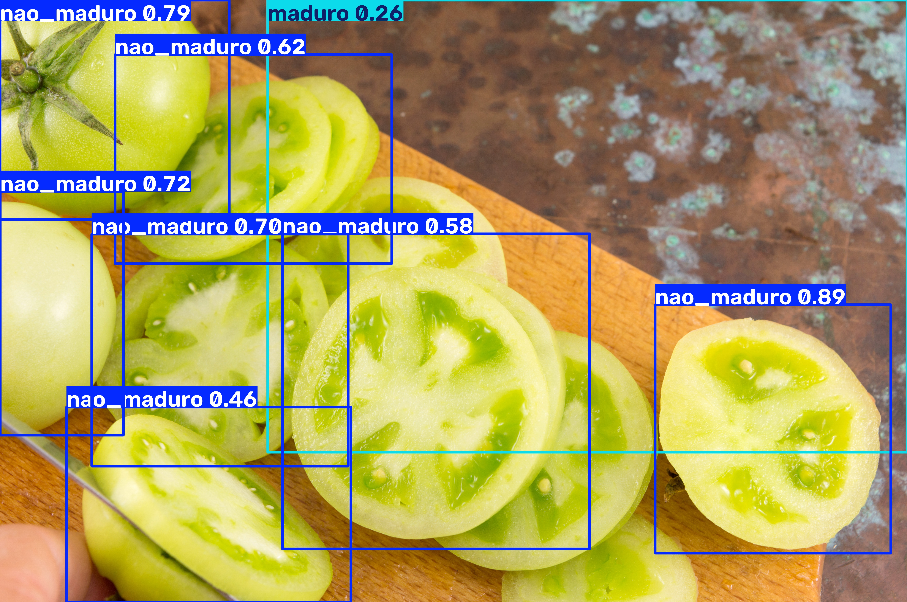
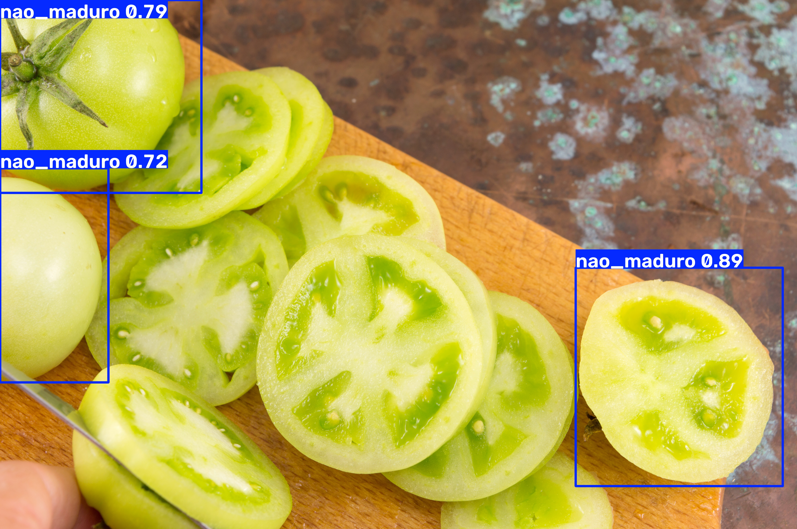
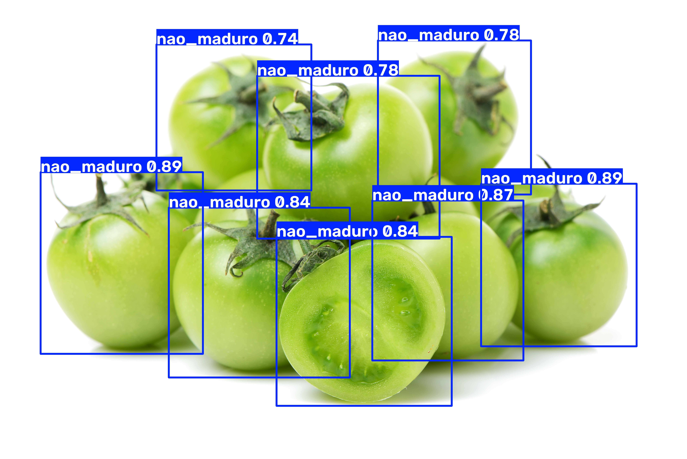
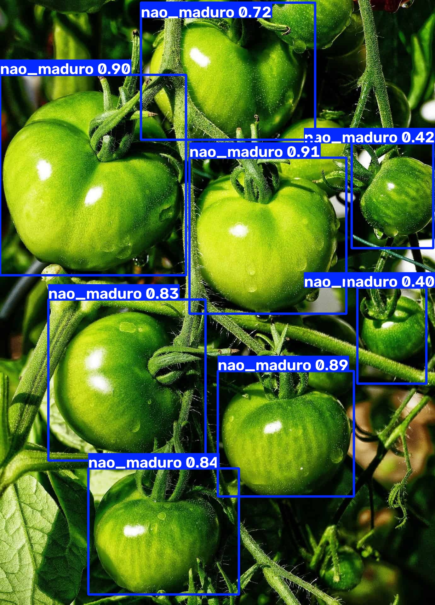
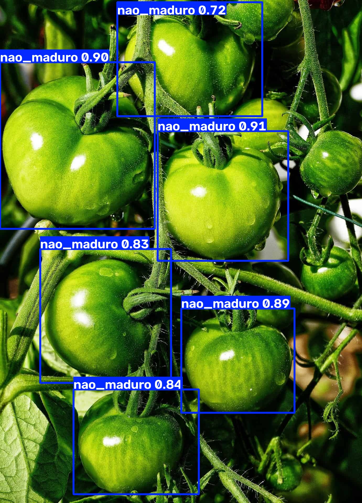
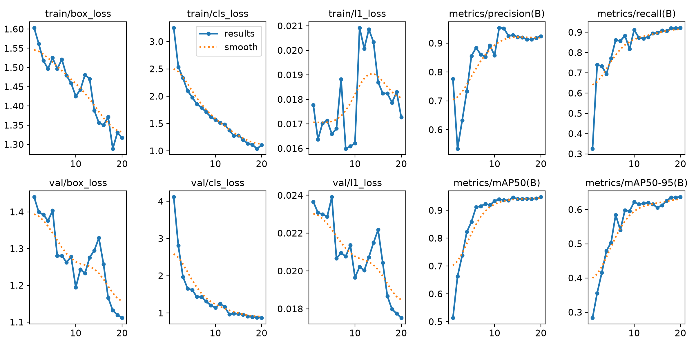

Correção após auditoria: foram encontradas fotos idênticas em divisões diferentes (ver ../docs/CONFERENCIA.md). As métricas abaixo registram a execução original com vazamento de dados e não comprovam generalização. Na final, todas as cinco imagens reservadas têm cópias no treino/validação e não atendem ao requisito de imagens inéditas. É necessário refazer a divisão, o treino e a avaliação.
Nome: Kauan Reis Bueno Turma: 8 Período Data: 17/11/2026
Foi escolhido o Ripe and Unripe Tomatoes Dataset, publicado no Kaggle por Suman Kunwar. A descrição informa 177 imagens JPEG anotadas para detecção, duas classes (0: unriped, 1: riped) e arquivos YOLO com classe x_centro y_centro largura altura. A finalidade é distinguir frutos em diferentes estágios de maturação, aplicação ligada à automação agrícola. Licença declarada: CC BY-SA 4.0. Fonte: https://www.kaggle.com/datasets/sumn2u/riped-and-unriped-tomato-dataset/versions/2.
Dataset público do Kaggle sobre tomates maduros e não maduros; foram pareadas 177 imagens JPEG com rótulos YOLO de duas classes. A licença indicada na página é CC BY-SA 4.0. Foi identificado um rótulo degenerado (altura zero); essa caixa foi removida apenas na cópia preparada, sem alterar o original.
Bounding box é um retângulo que delimita a posição e o tamanho de um objeto na imagem. No formato YOLO, registram-se centro X, centro Y, largura e altura em relação às dimensões da imagem, entre 0 e 1. A normalização torna as coordenadas independentes da resolução em pixels e facilita usar tamanhos de imagem diferentes.
data.yaml?Ele informa ao treinamento onde estão as imagens de treino, validação e teste e qual nome corresponde a cada ID de classe. Se a ordem estiver errada, o modelo aprenderá ou reportará nomes trocados, mesmo que as caixas estejam geometricamente corretas.
No treinamento, imagens anotadas são usadas para ajustar os pesos da rede, reduzindo erros de localização e classificação. Na inferência, os pesos já ajustados são aplicados a imagens de entrada para prever caixas, classes e escores, sem atualizar o modelo.
Sim. Precisão alta significa que poucas detecções emitidas são falsas; recall baixo significa que muitos objetos reais ficaram sem detecção. Por exemplo, um modelo pode emitir uma caixa apenas quando tem alta confiança e ainda omitir vários objetos.
Alguns exemplos não cobrem variações de iluminação, escala, fundo, ângulo, oclusão e aparência. O desempenho em imagens específicas não garante generalização; por isso são necessários dados representativos e avaliação em imagens separadas do treino.
conf=0.25 versus conf=0.70O limiar 0,70 elimina previsões com escore inferior a ele, então reduz o número de caixas. Nos 19 testes, o total passou de 100 caixas (conf=0,25) para 82 (conf=0,70). Comparando as caixas com os rótulos de referência em IoU ≥ 0,50, os acertos caíram de 92 para 79, falsos positivos de 8 para 3 e falsos negativos subiram de 9 para 22. Portanto, 13 detecções corretas desapareceram e 5 falsos positivos foram removidos. Os resultados das cinco imagens da tabela também mostram essa troca.
imgsz=416, batch=4, CPU (workers=0)best.pt: modelo/best.pt.| Imagem de teste | Objetos anotados | TP / FP / FN em 0,25 | TP / FP / FN em 0,70 |
|---|---|---|---|
| riped_tomato_15 | 3 | 3 / 0 / 0 | 3 / 0 / 0 |
| riped_tomato_17 | 2 | 2 / 0 / 0 | 2 / 0 / 0 |
| unriped_tomato_2 | 6 | 5 / 3 / 1 | 2 / 1 / 4 |
| unriped_tomato_39 | 8 | 8 / 0 / 0 | 8 / 0 / 0 |
| unriped_tomato_61 | 11 | 8 / 0 / 3 | 6 / 0 / 5 |
TP/FP/FN foram calculados com correspondência de classe e IoU ≥ 0,50. As predições anotadas estão em runs/detect/resultados/conf025/ e conf070/.









dataset/yolo/ contém as divisões e data.yaml; runs/detect/resultados/ contém os artefatos do Ultralytics; evidencias/ contém parâmetros e métricas do treino. As pastas conf025/ e conf070/ têm as cinco imagens selecionadas e as demais predições anotadas. A autoria, a origem e a licença do dataset estão registradas na seção Dataset e problema.

O modelo atingiu métricas altas neste teste de 19 imagens, mas o tamanho e a origem única do dataset limitam a generalização. O limiar 0,70 reduziu falsos positivos, mas perdeu mais objetos corretos. A caixa degenerada encontrada mostra a necessidade de revisar anotações; mais imagens diversas e uma revisão das caixas ajudariam a avaliar e melhorar a robustez.